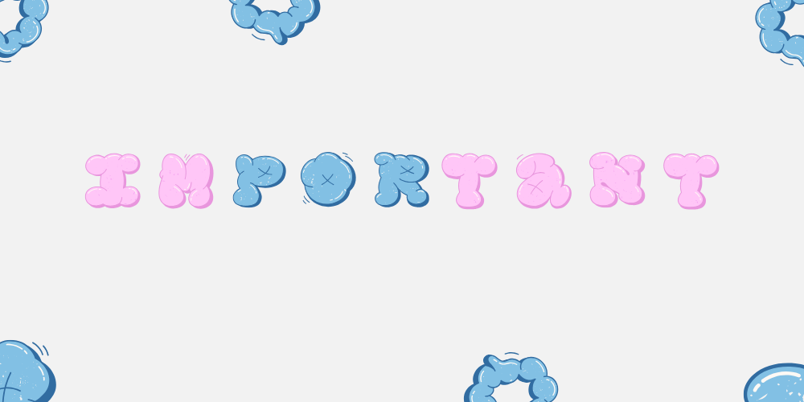

Informasi Umum

Selamat Datang di Kos-Kosan Lima Bersaudara!. Kami menyediakan tempat tinggal yang nyaman, terjangkau dan strategis.
Pada bagian informasi umum ini menguraikan beberapa peraturan yang perlu menjadi perhatian bagi para penguhi kos. Adapun peraturan tersebut diantaranya:
A. Ketentuan Umum
- Kos-kosan hanya diperuntukkan untuk penghuni yang terdaftar dan telah membayar biaya kos sesuai ketentuan.
- Penghuni wajib menjaga kebersihan, ketertiban, dan keamanan lingkungan kos.
- Dilarang membawa atau menggunakan barang-barang terlarang, termasuk narkoba, alkohol, senjata tajam, atau barang ilegal lainnya.
- Tidak diperbolehkan membawa binatang peliharaan kecuali dengan izin pemilik kos.
- Jam malam diberlakukan mulai pukul 22.00 WITA untuk menjaga kenyamanan bersama.
B. Kewajiban Penghuni
- Membayar biaya kos tepat waktu sesuai tanggal yang telah disepakati.
- Menjaga fasilitas kos agar tetap berfungsi dengan baik dan melaporkan kerusakan kepada pengelola.
- Menjaga hubungan baik dengan sesama penghuni kos dan tetangga sekitar.
- Memastikan pintu dan jendela kos terkunci saat keluar untuk keamanan.
- Menggunakan air secara bijak untuk menghindari pemborosan.
C. Larangan
- Dilarang membawa tamu lawan jenis ke dalam kamar kos kecuali dengan izin pemilik kos.
- Tidak diperkenankan membuat kebisingan, seperti memutar musik keras atau beraktivitas yang mengganggu penghuni lain.
- Dilarang memodifikasi kamar atau fasilitas kos tanpa persetujuan pemilik kos.
- Dilarang menggunakan kos sebagai tempat usaha atau kegiatan ilegal.
D. Kebersihan
- Penghuni bertanggung jawab atas kebersihan kamar masing-masing.
- Sampah harus dibuang ke tempat sampah yang telah disediakan.
E. Konsekuensi Pelanggaran
- Pelanggaran ringan akan diberikan peringatan sebanyak tiga kali.
- Kehilangan barang tidak menjadi tanggung jawab pemilik kos
- Pelanggaran berat dapat menyebabkan pengusiran tanpa pengembalian uang sewa.
- Penghuni yang merusak fasilitas kos wajib mengganti sesuai nilai kerusakan.
F. Penyesuaian dan Ketentuan Tambahan
- Pemilik kos berhak menambah atau mengubah peraturan sesuai kebutuhan dengan pemberitahuan terlebih dahulu kepada penghuni.
- Semua penghuni dianggap setuju dengan peraturan ini saat mulai tinggal di kos.
Fasilitas
Tersedia 7 kamar isian. Semua unit yang tertera memiliki bentuk, ukuran dan fasilitas yang sama. Terdapat teras depan dan tempat parkir bagi penyewa yang memiliki kendaraan roda 2 maupun roda 4. Area kos diawasi oleh CCTV 24 Jam.
Silahkan hubungi kami via WA pada kontak yang tertera untuk konfirmasi lebih lanjut.
| Nama Unit |
Harga |
Fasilitas |
Status |
| Kamar 1 |
Rp 600.000 |
Kasur, Lemari, Kipas Angin, Kamar Mandi dalam, Listrik Token Sendiri |
Tidak Tersedia |
| Kamar 2 |
Rp 600.000 |
Kasur, Lemari, Kipas Angin, Kamar Mandi dalam, Listrik Token Sendiri |
Tidak Tersedia |
| Kamar 3 |
Rp 600.000 |
Kasur, Lemari, Kipas Angin, Kamar Mandi dalam, Listrik Token Sendiri |
Tersedia |
| Kamar 4 |
Rp 600.000 |
Kasur, Lemari, Kipas Angin, Kamar Mandi dalam, Listrik Token Sendiri |
Tidak Tersedia |
| Kamar 5 |
Rp 600.000 |
Kasur, Lemari, Kipas Angin, Kamar Mandi dalam, Listrik Token Sendiri |
Tersedia |
| Kamar 6 |
Rp 600.000 |
Kasur, Lemari, Kipas Angin, Kamar Mandi dalam, Listrik Token Sendiri |
Tidak Tersedia |
| Kamar 7 |
Rp 600.000 |
Kasur, Lemari, Kipas Angin, Kamar Mandi dalam, Listrik Token Sendiri |
Tidak Tersedia |
Lokasi
Alamat Kosan:
Jalan Pelabuhan Sape, RT 002/RW 001, Desa Bugis, Kecamatan Sape, Kabupaten Bima, Provinsi Nusa Tenggara Barat, Kode Pos 84186.
Lokasi Strategis:
1 menit berjalan kaki ke Sekolah MAN SAPE atau MAN 2 BIMA
3 menit berjalan kaki ke Sekolah MTsN SAPE atau MTsN 2 BIMA
5 menit ke Pelabuhan Penyeberangan Sape
14 menit ke Pantai Lariti
Fasilitas Sekitar:
Toko dan warung makan hanya 170 meter dari kosan.
Puskesmas, ATM, apotek terletak 550 m dari kosan.
Tempat fitness terletak 1 km dari lokasi kosan.
Keamanan:
Lingkungan aman dan nyaman dengan sistem keamanan menggunakan CCTV.
Lihat Lokasi di Google Maps
Kontak
Hubungi Kami:
Senin-Sabtu: 09:00-17:00 WITA
(Kunjungan langsung)
Senin-Sabtu: 08:00-18:00 WITA
(Hubungi via WhatsApp)
Minggu & Hari Libur Nasional: Tutup
(Untuk pengaturan jadwal kunjungan di luar jam operasional, harap menghubungi kami sebelumnya.)
Hubungi Via WA